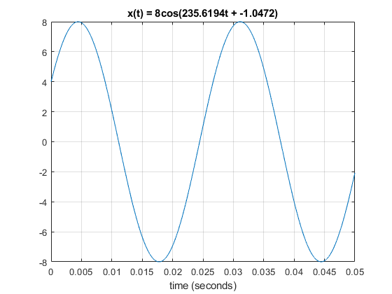
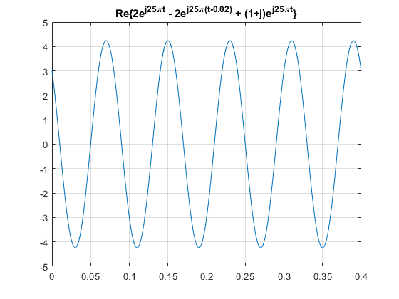
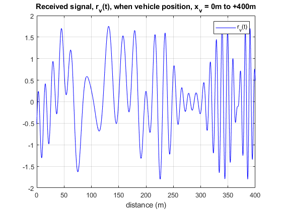
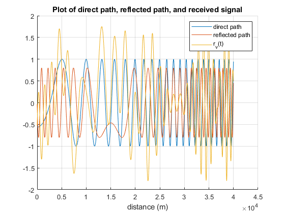

Contents
% Yonatan Carver % ECES 352 - Lab 2 - Introduction to Complex Exponentials clear ; clc ; close all
4 - Warm-Up: Complex Exponentials
function: mycos
% function [values, times] = mycos(A, w, phase, dur) [t, val] = mycos(8, (75*pi), (-pi/3), 0.05); % generates a plot
4.1.1, 4.1.2, 4.1.3 Write the Function M-File
function: syn_sin
f1 = 440; f2 = 555; f3 = 660; X1 = 2000 * exp(1j * (pi/2)); X2 = 2000 * exp(1j * (pi/2)); X3 = 2000 * exp(1j * (pi/2)); fs = 11000; dur = 1; % 1 second % function [xx, yy] = syn_sin(fk, Xk, fs, dur, tstart) [x1, y1] = syn_sin([f1, f2, f3], [X1, X2, X3], fs, dur, 0); soundsc(x1) % play sound
4.2 - Representation of Sinusoids with Complex Exponentials
(a)
tt = 0 : 1/1000 : 0.4; % range ot t that will cover 4 periods signal = real( (2 * exp(1j * 25 * pi * tt)) - (2 * exp(1j * 25 * pi * (tt - 0.02))) + ((1 + 1j) * exp(1j * 25 * pi * tt)) ); plot(tt, signal) grid on title('Re\{2e^{j25\pit} - 2e^{j25\pi(t-0.02)} + (1+j)e^{j25\pit}\}')
(b), (c)
% T = 0.08 % w = (2*pi)/T = 78.54 % phase = -w * t_d = -5.50 % A = 4.2426 (2.1213) % A*exp(1j * w * t) * exp(1j * phase)
5 - Multipath Fading ==========================================
(a)
% vehicle location: (xv, 0) % transmitter location: (0, dt) xv = 0 : 1/100 : 400; % vehicle position (x-value) dt = 1700; % transmitter location (y-value) c = 2.9e8; % speed of light t1 = sqrt((xv.^2) + (dt.^2)) / c; % distance from transmitter to vehicle % fprintf('time delay from transmitter to vehicle: %i seconds\n', t1)
(b)
% reflector location: (dxr, dyr) dxr = 150; dyr = 800; distance_t_to_r = sqrt(((dt-dyr).^2) + (dxr.^2)) / c; % distance from transmitter to reflector distance_r_to_v = sqrt(((dyr).^2) + ((dxr-xv).^2)) / c; % distance from reflector to vehicle t2 = (distance_t_to_r + distance_r_to_v); % fprintf('time delay from transmitter to reflector to vehicle: %i seconds\n', t2)
(c), (d), & (e)
F = 133e6; % 133 MHz tt = 0 : 1/100 : 400; % time range aka vehicle position 0m to +400m st = cos(2 * pi * F * tt); % source signal % received signal at the vehicle % = s(t - t_1) - 0.8 * s(t - t_2) rvt = real(exp( 1j .* 2 .* pi .* F .* (tt - t1))) - real( 0.8 .* exp( 1j .* 2 .* pi .* F .* (tt - t2))); plot(tt, rvt, 'b') grid on; hold on legend('r_v(t)') title('Received signal, r_v(t), when vehicle position, x_v = 0m to +400m') xlabel('distance (m)') % find peak value from the complex amplitude % since there are multiple peaks, the maximum peak value is found using % max(y_rvt) - which finds the maximum y-value from the signal [y_rvt, x_rvt] = findpeaks(rvt); x_rvt = tt(x_rvt); % largest and smallest values of received signal strength % we get these values because of interference and signal degredation after % being reflected fprintf('Maximum amplitude value from r_v(t): %i\n', max(y_rvt)) fprintf('Minimum amplitude value from r_v(t): %i\n', min(y_rvt)) % there do not appear to be any vehicle positions where we get complete % signal cancellation
Maximum amplitude value from r_v(t): 1.774911e+00 Minimum amplitude value from r_v(t): -1.220336e+00
direct = real(exp( 1j .* 2 .* pi .* F .* (tt - t1))); reflected = real( 0.8 .* exp( 1j .* 2 .* pi .* F .* (tt - t2))); figure grid on; hold on plot(direct) plot(reflected) plot(rvt) title('Plot of direct path, reflected path, and received signal') xlabel('distance (m)') legend('direct path', 'reflected path', 'r_v(t)')